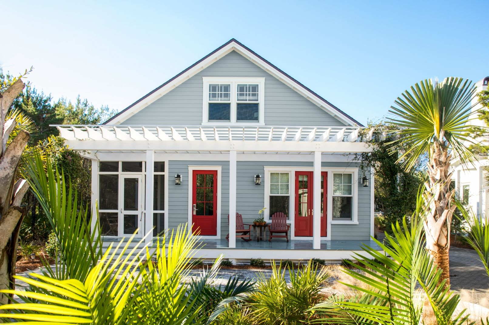
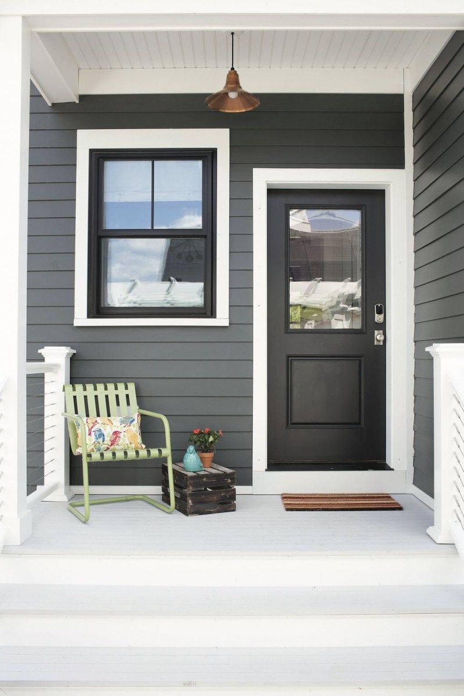
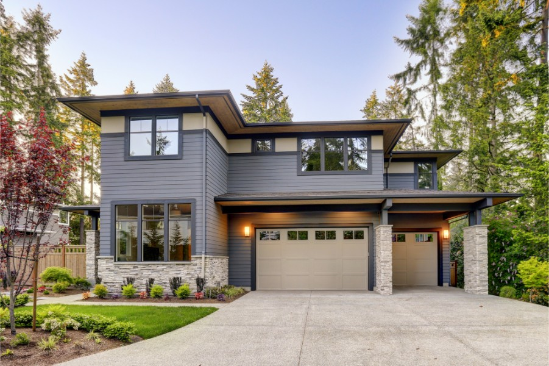

EXTERIOR PAINTING

PROFFESSIONAL EXTERIOR HOUSE
PAINTING NEAR YOU
Transform the exterior of your house with
fresh paint from top to bottom, everything
from
the front door to the shutters to the porch and to the
walls themselves.
WHY
There’s nothing like a fresh coat of paint to boost
your home’s exterior
curb appeal! While there are
various ways to improve the exterior of
your house, painting it with a new color is often the biggest bang
for
your buck.
HOW
Royal Hue’s experienced interior and exter
iorhouse painters are ready to
assist you
every step of the way, from selecting and ordering paint
colors and scheduling the painters, to completing your painting job
flawlessly.
REVIEWS
"Every efficient services; great website that
allows you to compare paint colours; and the
painter was very proffessional and efficient.
Would highly recommended
this company and
definetly use them again."
-Vijay
Exterior painting service
Whether you’re simply looking to paint your home and freshen up its appearance
you wish
to try something brand new, painting the exterior of your house will
make it instantly stand out from the neighbours.If you’re looking to sell your home,
painting is the fastest and
most efficient way to raise the value of your house.
But an exterior paint project is a difficult process If you’re not an experience
house painter, you may run into some issues.
Royal Hue’s exterior painting services
are unmatched in their ability to provide a quality
paint job that also gives you
access to ongoing support and expert painters.

Exterior paint colours
When deciding to paint your house, often one of the first steps is to choose your
paint color.
There are many elements to consider when choosing which
color to paint the exterior of your house.
Landscape – Your environment will influence which paint colors you wish to
paint
on the exterior. If your house is covered by a lot of shade, you may
consider a
lighter color. However, if you wish to blend into the trees, you
may want a darker
color. It’s critical to think about how you want your home’s
exterior to complement
its environment.
Architecture – Perhaps you have a Victorian-style house or a traditional
colonial. They are both very different architectural styles with different
peaks and accents.
However your home is built, colors can help draw attention to
specific architectural details.
Existing Colors – Your roof, your driveway, your gravel, your mulch are not going
to change colors when you paint. Consider how you want your exterior house paint
colors to accent these features of your home.
Exterior painting project
There is a lot that goes into painting the exterior of a house.
It will likely take
longer than a weekend. So if you aren’t prepared to
handle the following, you
may want to hire a professional to handle all
of your house painting needs.
Wash – Before painting, the exterior of your house will need to be washed.
You
can use a pressure washer to do this. It’s best when you start at the
top so all
of the dirt and grime will go down off the siding and trim.
Scrape – Next, it’s important to scrape any loose paint off of the siding of
the house.
It’s important to have drop cloths below where you work so these
paint chips don’t
land in the grass.
Sand – Sanding is a necessary step to smooth the exterior surfaces and create
an
ideal surface for the paint to adhere to.
Patch – If there are any remaining areas that need repair, they’ll need to be
patched
up before the exterior is primed.
Prime – Next the surface will need to be primed. Each prime is different. The
paint
manufacturer will indicate how many coats are needed.
Caulk – Seal all of the cracks and corners so no moister will seep through.
Paint – Finally, it’s time to paint the house in the color of your choice.

Hire Painters in Your Area
When considering an exterior house painting project and whether or
not you should DIY or hire, ask yourself the following questions. Do I
have all of the necessary equipment? Do I want to take the risk? Will I
take my time and do a good job? Only if you answer yes to all of those
questions, should you consider a DIY exterior paint project.
Royal Hue house painters have 5+ years of house painting experience. They are
licensed and insured, and experts in exterior painting. Not only that, Royal Hue
backs all of our projects with a 100% Satisfaction Guarantee. What have you
got to lose?
.jpg)